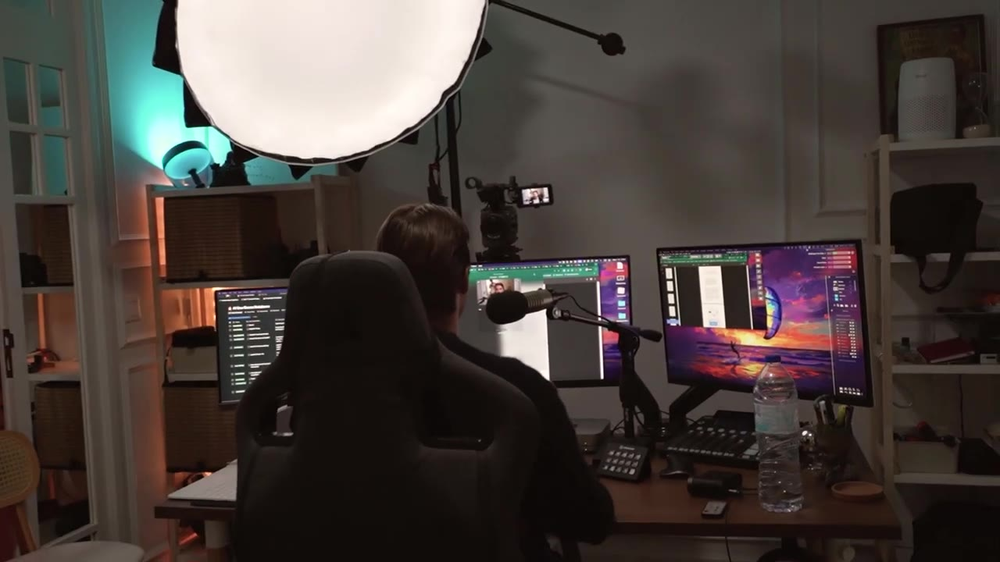
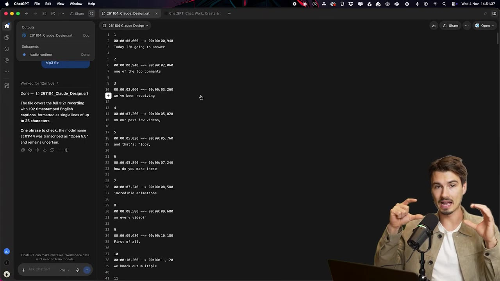
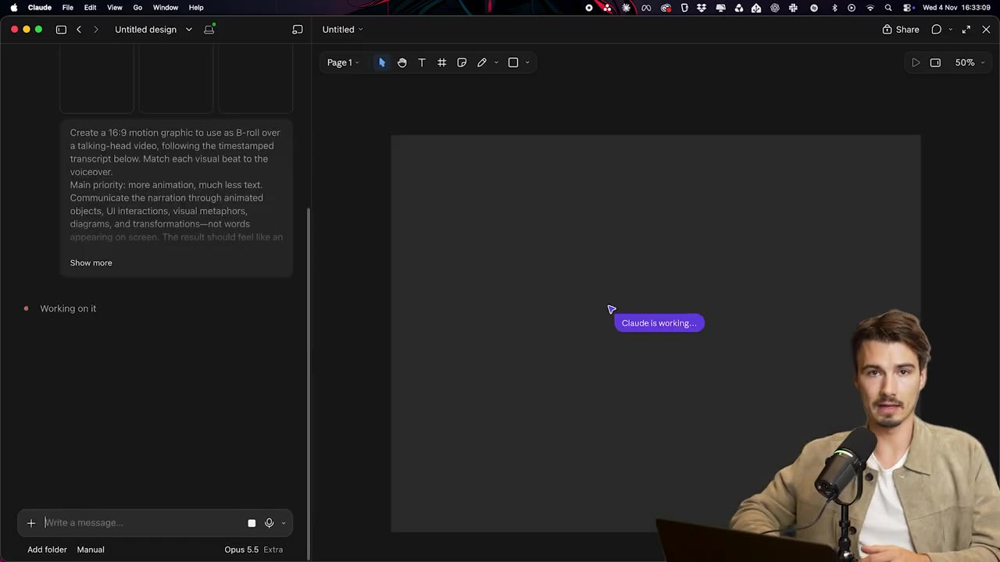
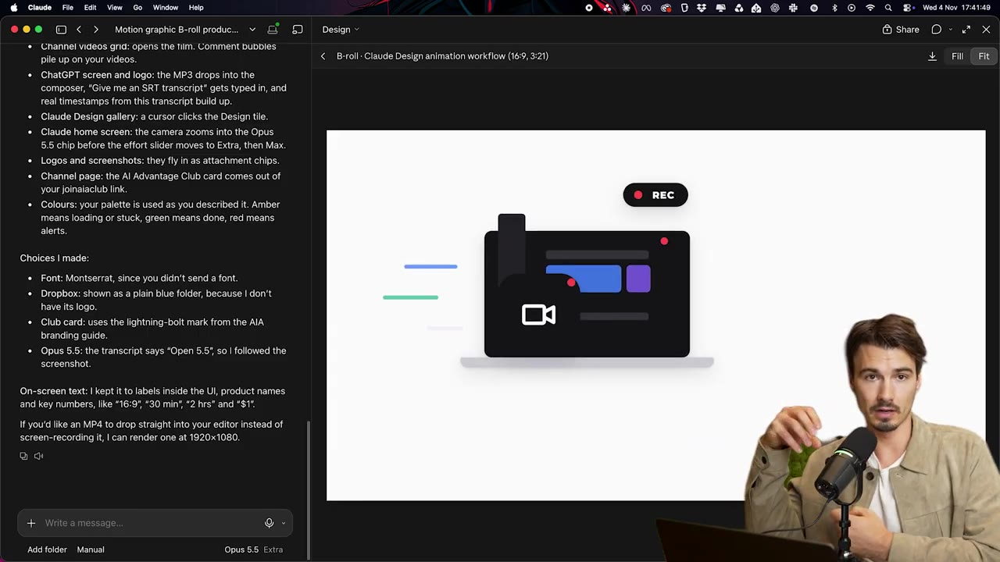

How I Edit My Videos with Claude
▶ 원본 영상 보기한눈에 보기
- 녹화한 영상에서 MP3를 뽑아 ChatGPT로 타임스탬프가 있는 SRT 자막을 만들고, 이를 Claude Design에 넣어 영상 내용에 맞는 애니메이션을 만든다.
- 핵심은 텍스트보다 움직임 위주의 16:9 그래픽을 요청하는 전용 프롬프트이며, 설명란에 공개되어 있다.
- 모델은 'Open 5.5'(자막 표기 그대로), Thinking 설정은 Extra나 Max로 두고, 로고와 인터페이스 스크린샷을 첨부한다.
- 생성에는 영상 길이에 따라 30분~2시간이 걸리고, 완성본은 내레이션과 함께 검토한 뒤 편집 팀이 B롤 레이어로 최종 편집에 넣는다.
이런 분께 도움이 됩니다
- 유튜브 영상에 들어갈 애니메이션 그래픽을 AI로 빠르게 만들고 싶은 크리에이터·편집자.
- 녹화 → 자막 → 애니메이션 → 편집으로 이어지는 실제 팀 워크플로우를 참고하고 싶은 분.
핵심 내용
전체 워크플로우
- 녹화 → MP3 추출 → SRT 자막(타임스탬프) 생성 → Claude Design에서 애니메이션 생성 → 검토 → 편집 소프트웨어에 합성하는 순서다. (2:35)
💡 대사와 타임스탬프를 AI에 주면, 말하는 내용에 맞춰 움직이는 그래픽이 나온다.
🔁 애니메이션 제작 순서
- 녹화
- 공유
- MP3 추출
- 자막 생성
- 애니메이션 생성
- 검토
- 편집 합성

녹화와 공유
- 외출 시에는 맥북 프로와 카메라, 집에서는 카메라에 연결한 맥 미니로 녹화한다.
- 항상 컴퓨터 소프트웨어로 녹화하는데, 작업이 하나로 합쳐져 더 편하기 때문이다.
- 녹화본은 Dropbox 폴더에 저장되어 편집자(로버트, 루카스)에게 자동 동기화된다.
타임스탬프 자막 만들기
- 녹화본에서 추출한 MP3를 ChatGPT에 올리고 SRT 자막 파일을 만들어 달라고 요청한다. (0:54)
- Claude 등 다른 AI를 써도 된다고 한다.
- 결과물은 대사와 타임스탬프가 함께 들어간 스크립트다.

Claude Design 설정
- Claude Design(claude.ai/design)에 SRT 파일을 넣고, 설명란의 애니메이션 프롬프트를 그대로 붙여 넣는다. (1:12)
- 프롬프트의 요지는 텍스트보다 움직임이 많은 16:9 비율 그래픽을 요청하는 것이다.
- 기본 설정은 텍스트를 너무 많이 생성하는 경향이 있어 이를 줄이려는 것이다.
- 모델은 보통 'Open 5.5'(자막 표기, 모델명 자막상 불분명), Thinking은 'Extra'나 'Max'로 설정한다.
- 기본값인 'Medium'보다 결과물이 훨씬 좋다고 한다.
- 로고와 인터페이스 스크린샷을 첨부하면 Claude가 실제 시각 자료를 파악한다.

생성과 검토
- 엔터를 누르면 작업이 진행되며 영상 길이에 따라 30분~2시간이 걸린다. (1:50)
- 가끔 멈췄다고 알려주지 않고 실제로 멈춰 있는 경우가 있다. 그럴 땐 계속하라고 명령하면 된다.
- 최종 영상에 넣기 전에 내레이션과 함께 다시 보고 수정 사항을 확인하는 과정이 매우 중요하다고 강조한다. (2:13)
최종 편집
- 애니메이션은 추가 B롤 세트가 되어, 편집 팀이 원하는 부분만 골라 쓴다. (2:27)

따라 해보기
준비물
- Claude Design 접근 권한(claude.ai/design), ChatGPT 또는 다른 AI(자막용), 영상 편집 소프트웨어
- 설명란의 프롬프트 문서, 로고 이미지, 인터페이스 스크린샷
- 소요 시간: 생성에만 30분~2시간
단계별 방법
🔁 따라 하기 순서
- 녹화하기
- MP3 추출
- SRT 만들기
- 프롬프트 붙여넣기
- 옵션 설정
- 생성 후 확인
- 편집에 합성
- 1녹화하기
카메라와 화면을 컴퓨터 소프트웨어로 함께 녹화한다.
- 2MP3 추출
녹화본에서 오디오(MP3)를 뽑는다. (추출 도구는 영상에서 생략됨)
- 3SRT 만들기
ChatGPT에 MP3를 올리고 "SRT 자막 파일을 만들어 줘"라고 요청한다. (0:54)
- 4프롬프트 붙여넣기
Claude Design에 SRT와 설명란 프롬프트를 넣는다. (1:12)
- 5옵션 설정
Thinking을 Extra/Max로 하고 로고·스크린샷을 첨부한다. (1:39)
- 6생성 후 확인
엔터를 누르고 완성되면 내레이션과 함께 검토한다. 멈추면 "계속해"라고 입력한다.
- 7편집에 합성
결과 영상을 B롤 레이어로 편집 소프트웨어에 넣는다.
따라 할 수 있는지 점검
- ✅ 바로 따라 할 수 있음: 녹화, ChatGPT로 SRT 생성, 프롬프트 붙여넣기, 검토와 편집 합성의 큰 흐름.
- ⚠️ 4단계 「프롬프트 붙여넣기」: 프롬프트 원문이 영상에 나오지 않음 → 설명란의 Google 문서 링크에서 복사.
- ⚠️ 5단계 「옵션 설정」: 모델명이 자막에서 'Open 5.5'로 나와 정확하지 않음 → 영상 1:39 화면에서 모델 선택 메뉴 확인.
- ⚠️ 2단계 「MP3 추출」: 사용 도구가 안 나옴 → 영상 편집 소프트웨어나 일반 변환 프로그램으로 추출 (보충).
- ⚠️ Claude Design 이용 조건: 요금제나 접근 권한 요건이 영상에 안 나옴 → claude.ai/design에서 확인.
- ❓ 결과물의 출력 형식(영상 파일 형식·해상도)이 구체적으로 언급되지 않음.
확인 방법
- 완성된 영상을 내레이션과 함께 재생했을 때 애니메이션이 말하는 내용과 맞고, 텍스트가 과하지 않은지 본다.
막히면
- 진행이 멈춘 듯 보이면 계속하라고 명령한다.
- 텍스트가 너무 많이 나오면 프롬프트의 "텍스트 최소, 움직임 위주" 지시가 들어 있는지 확인한다.
기억할 숫자·인용
- 생성 시간: 30분~2시간
- 비율: 16:9
- Thinking 설정: Extra 또는 Max (기본 Medium보다 좋다고 함)
- AI Advantage Club: 1달러 가입 (영상 홍보 내용)
생각해볼 점
- 결과 품질에 대한 평가("아름답고 세련됐다")는 제작자 본인의 주관적 의견이다.
- 30분~2시간의 생성 시간과 높은 Thinking 설정은 사용량·비용 부담이 될 수 있어, 자신의 요금제에서 가능한지 확인이 필요하다.
- 영상은 프롬프트 원문을 보여 주지 않아 설명란 문서를 열어야 재현할 수 있다.
바로 해볼 일
- 설명란의 프롬프트 문서를 열어 내용을 확인한다.
- 짧은 영상 하나의 MP3로 SRT를 만들어 본다.
- 로고와 화면 스크린샷을 준비해 Claude Design에서 짧게 시험해 본다.